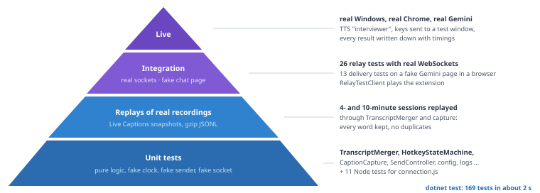
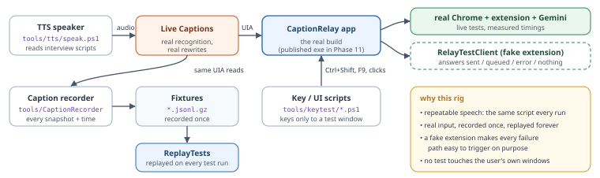

سیستمی که به Live Captions، یک هوک سراسری کیبورد، یک مرورگر و یک سرویس وب بیرونی وابسته است، بهسختی تست میشود. راهحل یک هرم است: هر چه پایینتر، تستها بیشتر، سریعتر و قطعیتر؛ هر چه بالاتر، واقعیتر و کمتر.

dotnet test در حدود دو ثانیه اجرا میشوند.tests/Fixtures ماند. هر اجرای تست، چهار و ده دقیقه گفتار واقعی را — با اسکرولها و بازنویسیهای واقعی —
دوباره از الگوریتم رد میکند. یک تست هم اسکرول را روی همین snapshotها شبیهسازی میکند.ROADMAP.md
نوشته شد.
dispatch تزریقی و تایمرهای تزریقی در افزونه؛ تستپذیری
بعداً اضافه نشد، شکل کد را تعیین کرد.Ctrl+Shift بعدی را بیاثر میکرد (فاز ۱۱) — ساختن وضعیت از کلیدهای واقعی.I used a test pyramid. At the base, unit tests cover the pure logic — merger, hotkey state machine, capture, send controller — with fakes and an injected clock, plus Node tests for the extension's connection. Above that, real Live Captions sessions that I recorded once are replayed on every run. Integration tests use real sockets and a fake chat page in a real browser. At the top, live runs with a text-to-speech "interviewer" and real Gemini, with every result measured. The live runs found three bugs the lower layers could not.